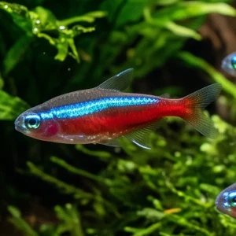

Nome popular principal
Neon-Cardinal
Neon-Cardinal, Cardinal, Tetra-Cardinal
Ficha de peixe
Tetras e Caracídeos
Uma joia vibrante da Amazônia que se destaca em aquários plantados e comunitários de água ácida e bem filtrada.

Nome popular principal
Neon-Cardinal, Cardinal, Tetra-Cardinal
Nome científico
Nome técnico essencial para taxonomia, cruzamento de manejo e referência editorial consistente.
Dificuldade de manejo
Use este nível como referência inicial, sempre considerando volume, estabilidade e compatibilidade do aquário.
Seção 1
Seção 2
Seções 4 a 6
Neon-Cardinal tem hábito alimentar onívoro. Excelente. 1 a 2 vezes ao dia em pequenas porções. Aceita prontamente micro-rações secas, mas atinge sua máxima vivacidade de cor quando alimentado com náuplios de artêmia e dáfnias.
Fêmeas adultas apresentam a região abdominal visivelmente mais roliça e volumosa que a dos machos. Tipo de reprodução: Ovíparo. Dificuldade de reprodução: Avançado. A reprodução em cativeiro é desafiadora, demandando água muito mole, PH bastante ácido e total escuridão para os ovos.
Alta. Substrato recomendado: Substrato escuro, areia fina de rio ou folhas secas no fundo. Necessidade de esconderijos: Média. Prospera em aquários bem arborizados com plantas densas, troncos e folhas secas, que simulam seu habitat natural de água negra.
Seção 7
É ligeiramente maior e tolera temperaturas mais altas do que o Neon-Verdadeiro, sendo o parceiro ideal para Acarás-Disco.
Seção 8
No Neon-Cardinal a faixa vermelha cobre toda a metade inferior do corpo, enquanto no Neon-Innesi (Verdadeiro) o vermelho vai apenas do meio do corpo até a cauda.
Sim, é uma das melhores combinações para aquários amazônicos, pois ambos apreciam água quente, ácida e de baixa dureza.
O ideal é ter no mínimo de 8 a 10 indivíduos para formar um cardume coeso e reduzir o estresse dos peixes.